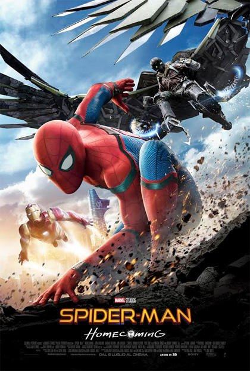
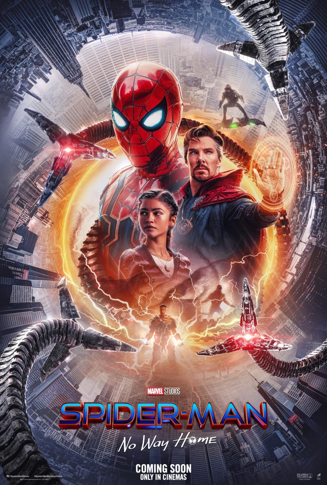

Introduzione
Thomas Stanley "Tom" Holland nato a Londra, 1º giugno 1996 è un attore britannico.
Dopo aver interpretato il ruolo di Lucas nel film The Impossible del 2012, è diventato noto dal 2016 per il suo ruolo di Peter Parker / Spider-Man nel Marvel Cinematic Universe; nel 2017 ha ricevuto il Premio BAFTA alla miglior stella emergente, vincendo il Saturn Award per il miglior attore emergente per il film Captain America: Civil War.
Biografia
Tom Holland è nato a Londra, figlio di Nicola Elizabeth Frost, fotografa, e Dominic Anthony Holland, comico e scrittore.
Da marzo 2011, suo padre ha scritto un blog intitolato “Eclipsed”, ossia un settimanale rinnovato di sequenze narrative che narrano gli eventi principali della vita professionale passata e attuale di Tom.
Ha frequentato la Donhead Prep School. Poi, dopo il superamento dell'Eleven plus, un esame di ammissione ai vari tipi di scuola secondaria somministrato ad alcuni studenti nel loro ultimo anno di scuola primaria, è diventato allievo al Wimbledon College. Dopo aver completato con successo i suoi GCSE, nel settembre 2012 Tom ha iniziato un corso di due anni nella BRIT School for Performing Arts e Digital.
Nell'ottobre 2012 Tom si è unito a una campagna per avvicinare i giovani a registrarsi come potenziali donatori di midollo osseo per il progetto carità britannico Anthony Nolan Trust
Carriera Ballerino
Tom Holland ha iniziato a ballare hip hop alla Nifty Feet Dance School a Wimbledon. Il suo potenziale fu notato dalla coreografa Lynne Page quando si è esibito al Richmond Dance Festival del 2006 insieme alla sua scuola di ballo.Dopo otto audizioni e successivi due anni di formazione, il 28 giugno 2008 Tom ha fatto il suo debutto nel West End in Billy Elliot the Musical, come Michael, il migliore amico di Billy. Ha dato la sua prima performance nel ruolo di Billy l'8 settembre 2009 ottenendo delle recensioni entusiastiche che lodano la sua versatile capacità di recitazione e danza.
Nel settembre 2008, Tom, insieme con il co-protagonista Tanner Pflueger, è apparso sul notiziario del canale Five dando la sua prima intervista in tv. Nel 2009 Tom è apparso nello show della ITV1 “The Feel Good Factor”. Il 31 gennaio, al lancio dello show, lui e altri due attori che interpretavano Billy Elliot, Tanner Pflueger e Layton Williams, hanno ballato una versione coreografata della Angry Dance del Billy Elliot the Musical.
L'8 marzo 2010, in occasione del 5º anniversario di Billy Elliot the Musical, i 4 attori che interpretavano Billy Elliot, incluso anche Tom Holland, sono stati invitati al 10 Downing Street per incontrare il Primo ministro del Regno Unito Gordon Brown. Tom è stato scelto come protagonista per la performance speciale del 5º anniversario il 31 marzo 2010. Elton John, il compositore delle musiche di Billy Elliot the Musical, che era tra il pubblico, ha riferito di essere rimasto "strabiliato" dalla performance di Tom.
Holland ha interpretato regolarmente il ruolo di Billy con altri tre attori fino al 29 maggio 2010, quando ha terminato la sua performance nel musical.
Carriera cinematografica
(2010-2013)
Due mesi dopo aver lasciato Billy Elliot the Musical, Holland ha superato con successo il provino per il ruolo da protagonista nel film The Impossible, diretto da Juan Antonio Bayona, a fianco di Naomi Watts e Ewan McGregor. The Impossible è basato su una storia vera che ha avuto luogo durante il Terremoto e maremoto dell'Oceano Indiano del 2004. Il film è stato presentato al Toronto International Film Festival il 9 settembre 2012 e commercializzato in Europa nell'ottobre 2012 e in Nord America l'ultima settimana di dicembre del 2012. Holland ha ricevuto elogi universali per la sua performance e molte riviste lo consideravano un contendente per una candidatura ai Premi Oscar. Nel 2012 Holland divenne un destinatario del premio Spotlight Award all'Hollywood Film Festival per il suo ruolo. "Siamo molto contenti che saremo in grado di riconoscere i talenti recitativi che sono sulla strada della scoperta e della celebrità" - "We are very excited that we will be able to recognize acting talents that are on the road to discovery and stardom", ha detto Carlos de Abreu, fondatore e direttore esecutivo degli Hollywood Spotlight Awards in un comunicato. Sempre per The Impossible, è stato annunciato che Holland è diventato un vincitore del National Board of Review Award nella categoria miglior attore emergente.
Nel 2011 Holland era nel cast della versione britannica del film Arrietty - Il mondo segreto sotto il pavimento, prodotto dallo studio giapponese Studio Ghibli: ha dato voce al personaggio principale del film Sho. Nel 2013 Tom Holland ha ricoperto il ruolo di Isaac nel film Come vivo ora, diretto da Kevin Macdonald, a fianco di Saoirse Ronan. Nel 2015 partecipa al film Heart of the Sea - Le origini di Moby Dick, diretto da Ron Howard.
(2015-2020)
Nel 2015 viene scelto come nuovo interprete di Peter Parker / Spider-Man nel nuovo film dedicato al personaggio, ambientato nel Marvel Cinematic Universe. Holland è apparso per la prima volta come Spider-Man in Captain America: Civil War nel 2016: il film è stato accolto positivamente dalla critica cinematografica, ha incassato un totale mondiale complessivo di $1.153,3 milioni ed è il film di maggiore incasso del 2016.
Ha ripreso il ruolo in Spider-Man: Homecoming, film stand-alone del 2017, con un incasso complessivo di $879,8 milioni e il 92% delle recensioni professionali positive su Rotten Tomatoes.
Nell'ottobre 2017 entra nel cast di Spie sotto copertura, nuovo film Blue Sky Studios, insieme a Will Smith. Nel febbraio 2018 viene scelto come doppiatore di Jip nel nuovo film sul Dottor Dolittle, The Voyage of Doctor Dolittle, previsto per il gennaio 2020.
Holland ha vestito di nuovo i panni di Spider-Man in Avengers: Infinity War nel 2018.
Nel settembre 2018 viene annunciato come protagonista di The Devil All The Time, tratto dall'omonimo romanzo, dove si ricongiungerà con il collega Sebastian Stan. Nel dicembre 2018 annuncia di essere stato scelto insieme a Chris Pratt per il nuovo film della Pixar Onward, in uscita nel marzo 2020.
Tom Holland ha interpretato nuovamente Spider-Man nei film Avengers: endgame e Spider-Man: Far from Home sempre nel 2019.
Nell'ottobre 2019 hanno avuto inizio le riprese del film Cherry - Innocenza perduta (2021), diretto dai fratelli Anthony e Joe Russo.
(2021-presente)
Tom tornare poi come Spider-Man nel film Spider-Man: No Way Home del 2021.
Sempre nel 2021 reciterà in Chaos Walking come protagonista e poi nel omonimo film ispirato alla saga di Uncharted come Nathan Drake nel 2022
Arrietty - Il mondo segreto sotto il pavimento(2010)
Heart of the Sea:
Le origini di Moby Dick (2015)
Captain America:
Civil War (2016)

Spider-Man: Homecoming (2017)
Avengers: inifinity War (2018)
Spider-Man:
Far From Home (2019)
The Devil All The Time (2020)
The Voyage of Doctor Dolittle (2020)
Onward:
oltre la magia (2020)

Spider-Man:
No Way Home (2021)